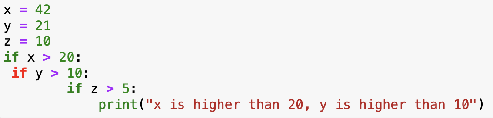
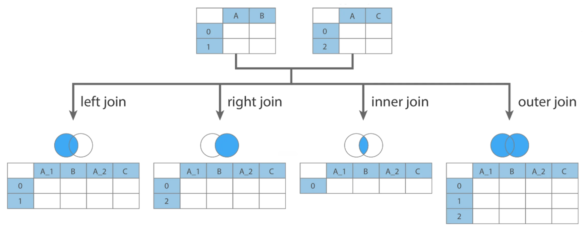

# In Python the if statement checks the condition that follows if, and stops at :
# it then runs the indented code
# !!!!! Make sure code you want to run after the condition is indented.
x = 42
if x > 20:
print("x is higher than 20")
# since x > 20, this code will print "x is higher than 20"Week 2: If, loading data & data operations
0. Overview
| Python | Example Python | |
|---|---|---|
| Import Data (csv, txt, json, xls) | pd.read_csv() | |
| Import package with alias | import pandas as pd | |
| Create a dataframe and list | pd.df() | |
| Create a matrix and vector | np.matrix() | |
| Remove columns | print(f”The value is {plop}“) | |
| Extract columns | [1,2,3,4,68] | |
| Dictionaries | data = {} | |
| Lists | data = [] | |
| Merge | merge() | |
| Export data | df.to_csv(‘output.csv’) | |
| Subset a dataframe | df[df[‘Year’] == 2023] | |
| Use if, else, elif | if x > 10: |
1. If, else, if else
1.1 If statements
We are often faced with a situation in which we need to check if something a certain condition is met before we proceed with the next action. For example, a coffee machine should only run the water if the temperature reaches a certain level. A ticket should only be issued if the car exceeds a certain speed. A map should show red if pollution levels exceed a specific threshold. The key word in all these examples is if. In algorithms this is a terms we use the check for specific conditions, and it translates directly to both R and Python.
An if statement checks a condition that we supply and only runs the code if the condition is true.

You can put any length of code after the if statement, and you can also use multiple if statements:
# In Python the if statement checks the condition that follows if, and stops at :
# it then runs the indented code
# !!!!! Make sure code you want to run after the condition is indented.
x = 42
y = 21
if x > 20:
if y > 10:
print("x is higher than 20, y is higher than 10")
# since x > 20, this code will print "x is higher than 20"If you see an if statement turn red in jupyter, your indentations might be off. The code could still run, but you should solve this issue to avoid problems later on. The usual indentation is a tab. The second level, two tabs and so on.

1.2 If else statements
The if statement checks one condition, this means that if the condition is true, we run code, if it’s false we don’t. However, in many cases we would like to have different action when the condition is true or false. For example, if we grade students, we want a result to be “admitted” if the grade is >= 5.5 and “failed” when the grade is lower. This is where the if else statement can be used. In essence, this statement checks if the condition is true, run the code, if the condition is not true. It runs a different line of code:
grade = 6.8
# In Python, the else statement has the same indentation as the if statement
if grade >= 5.5: # we check the if the
print("Admitted")
else:
print("Fail")We can of course complicate things even more, by combining multiple if statements, in Python there is a specific operator for this: elif:
z = 7
if z > 10: # we check the first condition, if this is true, then we print
print("z is greater than 10")
elif z > 5: # if the first condition was false, and the second one (z > 5) is true then we print
print("z is greater than 5 but not greater than 10")
else: # if both conditions are false then we print:
print("z is not greater than 5")
Exercises part 1:
- Carbon Emission Category Checker: Write a program that takes the amount of carbon emissions (in tons) a person is responsible for annually and categorizes them as follows:
- If the emissions are less than 2 tons, print “Low Emissions.”
- If the emissions are between 2 and 6 tons, print “Moderate Emissions.”
- If the emissions are between 6 and 15 tons, print “High Emissions.”
- If the emissions are above 15 tons, print “Very High Emissions.”
- Water Conservation Awareness: Create a program that takes the number of liters of water a person uses per day and assigns a rating based on conservation awareness:
- If the usage is below 50 liters, print “Excellent Conservation.”
- If the usage is between 50 and 100 liters, print “Good Conservation.”
- If the usage is between 100 and 150 liters, print “Average Conservation.”
- If the usage is above 150 liters, print “Poor Conservation.”
2. Importing data
2.1 .txt, .csv & .tsv
package required openpyxl, pandas
Data comes in many different formats. The most basic formats are .txt and .csv. CSV stands for “Comma Separates Values”, which means, as you may have guessed, that each column of your data is separated by a “,”. The annoying part is that csv can have different separators (also called delimiters). Nowadays this is often a semicolon: “;”. because we don’t always know what the separator is, we add an argument to the function to indicate how the data should be read: sep = “;”.
import pandas as pd
# Import CSV File
csv_file = "sample_data.csv"
df_csv = pd.read_csv(csv_file, sep = ";")
# Import TXT File (Space-Separated)
txt_file = "sample_data.txt"
df_txt = pd.read_csv(txt_file, sep=" ")TSV is normal text file in which the separator is a Tab. So to open this file we can use the csv function with the tab as a delimiter. A tab is written “ in python.
import pandas as pd
# Import TSV File (Tab-Separated)
tsv_file = "sample_data.tsv"
df_tsv = pd.read_csv(tsv_file, sep="\t")We also often find data that has been created or manipulated in Microsoft Excel, this results in .xls or .xlsx files. The file structure underlying this data is a lot more complex that a simple csv or text file, since Excel adds information about the columns, the cells, functions, colors etc. In reality it is a XML file, that is hard to read for mere humans. This is why we need a specific function to read the data.
import pandas as pd
# Import XLS (Excel) File
xls_file = "sample_data.xlsx"
df_xls = pd.read_excel(xls_file)
print(df_xls)The previous file formats usually contain simple tables (just like an excel sheet, with one observation per row/column combination). For more complex datasets we could have table in each cell. Imagine for example a dataframe in with a patent on each row, each patent can have multiple assignees, with addresses and inventors associated to them. This means that we could have a dataframe inside of the dataframe. To accommodate this type of complex data, the JSON file format has been developed. It was developed specifically for complex data structures.
import pandas as pd
# Import JSON File
json_file = "sample_data.json"
df_json = pd.read_json(json_file)
Exercises part 2:
- Loading data in Python:
- Loading: On blackboard you will find multiple files with different extensions (csv, tsv, json). Load each of these files into python.
- Print the dataframes to see if the imports completed correctly
3. Dataframes and Matrices
In most data analysis tasks we work with real world data. This data often takes the form of data tables (think of an excel sheet with columns and rows). When we import this data into R or Python we create an object that contains this data in a format similar to an excel sheet. Usually, there are columns with names and each row is an observation. This structure is referred to as a data frame. The data that you loaded in the previous exercise also takes this form.
A dataframe has particular characteristics, it has column names that we can use, and the data it contains can vary in nature (a column with text, a column with numbers, and so on):

This is the preferred format in data analysis.
An alternative, that often looks visually identical, but is quite different, is the matrix. While the dataframe is a specific structure to arrange data, a matrix is a mathematical object. This means that we can perform mathematical operations on it (matrix multiplication, inversion). Different functions in R will sometimes require a matrix and sometimes a dataframe (or accept both).
In R, a matrix can accept any form of data (just like a dataframe), while in python a matrix can only accept numerical values.
3.1 Dataframes, Matrices and lists in Python
3.1.1 Creating a dataframe in Python
Similar to R, a dataframe in Python can contain any type of data. While we don’t need a package to create them in R, we do need one in Python. First we create what is called a dictionary by specifying the names of the columns we want to have, followed by a vector that contains the data. We then transform this dictionary into a dataframe. The dictionary object in itself is already useful and can be used for analysis. The transformation into a pandas dataframe allows us to use all the functions from the pandas package, specifically aimed at data analysis.
# we load the package
import pandas as pd
# create a dictionnary
data = {
'Name': ['Alice', 'Bob', 'Charlie'],
'Age': [24, 27, 22],
'Score': [85.5, 91.2, 78.3]
}
# transform into a pandas dataframe
df = pd.DataFrame(data)3.2.2 Creating a matrix in Python
A matrix is a mathematical object. Functions related to matrices can be found in the numpy package. The matrix function, creates a matrix from a list of lists. A list is created by putting values between brackets. In the example below, [1,2,3] is a list, and [[1, 2, 3], [4, 5, 6], [7,8,9]] is a list of three lists. The matrix functions combines them into a matrix.
import numpy as np
np_matrix = np.matrix([[1, 2, 3], [4, 5, 6], [7,8,9]])If we want to create an empty matrix because we have a script thatw ill fill it in later, we can use functions from the numpy package as well:
import numpy as np
empty_matrix = np.zeros((3, 3))
# this will create a 3x3 matrix filled with zeros
Exercises part 3:
- Create a 10 by 10 matrix filled with 1s
- Multiply each element of this matrix by 5
- compute the sum of all elements in this matrix
- The runif() function allows us to generate random values in R. In python the np.random.rand function from the numpy package allows the same. Create a 3 by 3 matrix filled with random values
- create a dataframe with 3 columns, the first column should be called “ID”, the second “Country” and the third “Value”. The countries columns should have “NL”, “BE”, “FR” as observations, ID should have 1, 2, 3 and Value should have 1340.90, 142.23, 821.42
- Multiply the first column of the matrix (from question 4) with the value column of the dataframe
3.2.3 Creating a list
A list in Python is a data structure used to store multiple items in a single variable. You can think of it as a container that keeps things organized like a box with labeled compartments where you can put different objects.
We use lists because sometimes we don’t want to make lots of separate variables like this:
Techno_1 = "Wind Energy"
Techno_2 = "Solar Energy"
Techno_3 = "Water Energy"We can store the same information in a list, this results in only one object:
Technologies = ["Wind Energy", "Solar Energy", "Water Energy"]As you can see, a list is created using brackets and can contain any type of object.
# Creating an empty list
plop = []
# Creating a list with previously loaded data (assuming variables are defined)
plop = [csv_file, txt_file, json_file]Accessing elements from the list can be done with numbers:
# Extracting the value in the second position (index 1)
element_2 = plop[1]
# Checking the type (class) of the object
print(type(plop[1])) # This shows the class of the object3.2.4 Dictionaries
While lists are very handy when we need to go through them one by one, or when searching position is enough, they remain limited with more complex data structures. It would be helful if we could access elements by a key rather than a number, for example if we have data about technologies, that we could search by “technology” rather than an index (0, 1, 2, etc,).
This is where dictionaries come in, a dictionary is more like a labelled box system: you give each box a special name (a key) and store a value in it. You access the value by using its key, not by counting positions. Example:
technology_efficiency = {"Solar": 24, "Wind": 19, "Water": 22}
print(technology_efficiency["Solar"]) # prints 24A dictionary in Python is a collection that holds data in key-value pairs, making it easy to look up values by their associated keys. Dictionaries are especially useful when you need a collection with named elements rather than numerical indices, as in lists.
Use a dictionary when you want to look up items quickly by a meaningful label (key), not by a number. Dictionaries support very fast lookup by key while with a list if you search by value it may take a lot longer for large lists.
To create a dictionary, use curly braces {} with key-value pairs separated by colons :
# Creating an empty dictionary
info = {}
# Creating a dictionary with initial data
info = {
"name": "Alice",
"age": 30,
"job": "Data Scientist"
}4. Merging dataframe
When working with data we often need to merge information from different datasources. For example, we want to analyse the link between population density and air pollution. We can find information on pollution via the WHO, but this does not supply us with population numbers. We then end up with two datasets, one with pollution and one with population.
| Country | Pollution |
|---|---|
| NL | 21 |
| DE | 23 |
| FR | 17 |
| Country | Population |
|---|---|
| NL | 17 |
| DE | 84 |
| FR | 68 |
We would prefer to have this information in one set. Combining the two datasets means that we need to make sure that the population of the Netherlands is matched to to pollution in the Netherlands. Since we cannot assume that all the observations are always in the right order, we will use specific functions that match observations based on a key. In this example, the key would be Country, we want to add observations from the second dataframe to the first based on the Country.
merged = pd.merge(df_1, df_2, on="Country")
print(merged)There are multiple ways to merge dataframes, we can specify how we want to merge by adding the “how” argument to the function.
pd.merge(df_1, df_2, on="Country", how="inner") # Only matching IDs (default)
pd.merge(df_1, df_2, on="Country", how="left") # Keep all from 'students'
pd.merge(df_1, df_2, on="Country", how="right") # Keep all from 'grades'
pd.merge(df_1, df_2, on="Country", how="outer") # Keep all from both
5. Manipulating Dataframes and matrices
5.1 Selecting columns and rows
Just as in R, Python allows for the extraction of columns both by their name and by their index. Locations in dataframes are accessed by the use of [[]], the first argument between brackets will refer to the rows, the second to the columns. If you want to extract all rows for a given column (or simply put, you want to extract a specific column), you would write [[“column_name”]].
import pandas as pd
# Create a sample DataFrame
data = {
'Name': ['Alice', 'Bob', 'Charlie', 'David', 'Eve'],
'Age': [25, 30, 22, 28, 24],
'Gender': ['Female', 'Male', 'Male', 'Male', 'Female']
}
df = pd.DataFrame(data)
# Extracting one Column in Python
selected_columns = df[['Name']]
print(selected_columns)
# Extracting multiple Columns in Python
selected_columns = df[['Name', 'Age']]
print(selected_columns)Using the index of the columns is also a possibility. For this case we will need to use the .iloc function. .iloc is used when we are addressing a dataframe by the index of the rows and columns, i.e by the number corresponding to the location in the dataframe. We need to provide two arguments for this function, the rows we want to select and the columns we want to select. On the contrary of the previous example, we need to specify rows when we use .iloc. If we want to extract all rows for a given column, we can do so by using :.
If we want to use a combination of both names and indexes, we need to use the .loc function which does not expect numbers as arguments.
import pandas as pd
# Create a sample DataFrame
data = {
'Name': ['Alice', 'Bob', 'Charlie', 'David', 'Eve'],
'Age': [25, 30, 22, 28, 24],
'Gender': ['Female', 'Male', 'Male', 'Male', 'Female']
}
df = pd.DataFrame(data)
# Extracting Columns by Index in Python
# We use ":" in the first argument to specify that we want all rows. We then specify the columns we want (here 0 and 1).
selected_columns = df.iloc[:,[0, 1]]
print(selected_columns)
# If we do not specify which rows we want, Python will
# interpret the numbers as being rows and not columns.
filtered_rows = df.iloc[[0, 4]]
print(filtered_rows)
# A combination of both is also possible:
row3 = df.loc[0, "Name"]
print(row3)5.2 Filtering your dataframe
We will use filtering on a pandas dataframe. As discussed in the chapter about basic operations, the logic operators will change compared to the base logic operators. Mainly: we will use & for and, | for or and ~ for not.
import pandas as pd
# create a small dataframe
data = {
'Pat_num': ["WO200214562", "WO2023738962", "EP2023778962", "FR2019272698", "FR201922671"],
'Year': [2002, 2023, 2023, 2019, 2019],
'Domain': ["B60C", "B60C", "B29D", "C08K", "C08K"]
}
df = pd.DataFrame(data)
# subset the dataframe to extract only patents from 2023
subset = df[df['Year'] == 2023]
print(subset)
# subset the dataframe to extract patent in domain "B60C"
# with year >= 2019
subset = df[(df['Year'] >= 2019) & (df['Domain'] == "B60C")]
print(subset)
# subset the dataframe to extract patent NOT in domain "B60C"
subset = df[~(df['Domain'] == "B60C")]
print(subset)5.3 Adding columns and rows
In a DataFrame, we refer to columns by their names within brackets ([]). We can use this method to create a new column in a DataFrame:
# Creating the new column with the computed values
Data['new_column'] = Data['Fuel_consumption'] / Data['Population']This creates a new column called “new_column” in the Data DataFrame. The values in this column will be the result of dividing Fuel_consumption by Population. By default, Python’s pandas library will apply this operation row-wise.
For numpy matrices, we cannot refer to columns by name, as columns in matrices don’t have labels. To add a column to a matrix, we can use the np.column_stack() function.
# Importing numpy
import numpy as np
# Calculating the average consumption
average_consumption = Fuel_consumption / Population
# Adding the new column to the matrix
Data = np.column_stack((Data, average_consumption))5.4 Further actions: grouping and summarising
With real data we often need to regroup observations by year, organisation, region, or any other entity. For example if we have a set of scientific publications and we want to know how many publications we have per author per year, we need to regroup the observations in both those dimensions. In Python we will do this using the pandas package. Mainly we will focus on four functions, groupby, agg, count and reset_index.
groupby focuses on grouping observations according to a specific value. We can the compute values based on the created groups. For example, if we have a database with researchers and their publications, if we want to know how many publications each of them has, we would first have to create a subset per researcher, count how many publications he/she has, store this information, then move to the next one and so on. groupby allows us to create these subsets and agg allows us to compute on these sets:
import pandas as pd
data = {
'Pat_num': ["WO200214562", "WO2023738962", "EP2023778962", "FR2019272698", "FR201922671"],
'Year': [2002, 2023, 2023, 2019, 2019],
'Domain': ["B60C", "B60C", "B29D", "C08K", "C08K"]
}
df = pd.DataFrame(data)
grouped_set = df.groupby('Domain')['Year'].agg([min, max]).reset_index()
print(grouped_set)
grouped_set = df.groupby('Domain').count().reset_index()
print(grouped_set)
Exercises part 4 & 5:
- Merging datasets:
- You have loaded 3 datasets in exercise 2. Create one dataset called full_data that combined all three datasets.
- Manipulate the dataset:
- In this dataset the GDP is the Gross Domestic Product. Compute the GDP per capita by dividing the GDP by the population, put these values in a new column called GDP_per_capita
- On average, what percentage of water bodies are in poor condition in Europe?
- Create a dataset with countries that have a mean_pollution higher than 15, call this dataset EU_higher_than_fifteen
6. Exporting data
Once we are done with our data operations we often want to export the results so that we can share them, save them, or prepare them for treatment in other software. In this section, we will cover how to export data from Python to various common formats such as CSV, TXT, Excel, JSON, and Pickle. We’ll use the pandas library for these operations as it provides convenient functions to handle different formats. The location where the file will end up depends on the path you supply in the function. If you only supply the name of the file, it will save in the same location as your script.
# Export to CSV
df.to_csv('output.csv')# Export to TSV
df.to_csv('output.txt', sep='\t')# Export to Excel
import openpyxl
df.to_excel('output.xlsx')# Export to Excel
df.to_json('output.json')In Python, the pickle module is used for serializing and deserializing Python objects, which means converting Python objects to a byte stream (serialization) and back to their original format (deserialization). This allows you to save complex data types, like dictionaries, lists, or custom objects, to a file so you can easily load them later without needing to re-define or re-calculate the data.
df.to_pickle('output.pkl')Exercice part 6
- Create a datafame with 4 columns, export the dataframe to an .xlsx file
- Export the dataframe from question 2 to a .pkl file
- Check your harddrive and find the location of the files
7. Reading scripts
7.1 A script on waste levels in Python
Read the following script, your aim is to understand what the script does. Describe each line of the script
import pandas as pd
waste_data = pd.DataFrame({
"Country": ["CountryA", "CountryB", "CountryC", "CountryD", "CountryE"],
"Total_Waste": [2.5, 1.8, 4.0, 3.1, 1.2], # Tons per capita
"Recycling_Rate": [65, 30, 50, 85, 20] # Percentage
})
waste_data["Waste_Level"] = "Moderate"
waste_data.loc[waste_data["Total_Waste"] < 2, "Waste_Level"] = "Low"
waste_data.loc[waste_data["Total_Waste"] > 3, "Waste_Level"] = "High"
waste_data["Sustainable_Practices"] = "No"
waste_data.loc[waste_data["Recycling_Rate"] > 50, "Sustainable_Practices"] = "Yes"
high_waste_no_recycling = waste_data[
(waste_data["Waste_Level"] == "High") & (waste_data["Sustainable_Practices"] == "No")
]
print("Countries with high waste and no sustainable practices:")
print(high_waste_no_recycling)
average_recycling = waste_data["Recycling_Rate"].mean()
waste_data["Above_Average_Recycling"] = waste_data["Recycling_Rate"] > average_recycling
waste_data.to_csv("waste_management_analysis.csv", index=False)
print("Waste Management Analysis DataFrame:")
print(waste_data)7.2 A script on solar energy production
Read the following script, your aim is to understand what the script does. Describe each line of the script
import pandas as pd
solar_data = pd.read_csv("data/solar_production.csv")
solar_data = solar_data[["country", "date", "production_mwh"]]
solar_data["year"] = pd.to_datetime(solar_data["date"]).dt.year
country_year = solar_data.groupby(["country", "year"], as_index=False)["production_mwh"].mean()
country_year = country_year.rename(columns={"production_mwh": "avg_production"})
recent_data = country_year[country_year["year"] >= 2018]
recent_data.to_csv("data/avg_solar_production_recent.csv", sep=";", index=False)
print("Average solar production per country since 2018 has been saved.")7.3 A script on wind energy production.
Read the following script, your aim is to understand what the script does. Describe each line of the script.
import pandas as pd
wind = pd.read_csv("data/wind_generation.csv")
capacity = pd.read_csv("data/installed_capacity.csv")
wind = wind[["region", "date", "generation_mwh"]]
capacity = capacity[["region", "capacity_mw"]]
wind["year"] = pd.to_datetime(wind["date"]).dt.year
wind_year = wind.groupby(["region", "year"], as_index=False)["generation_mwh"].sum()
wind_year = wind_year.rename(columns={"generation_mwh": "total_generation"})
merged = pd.merge(wind_year, capacity, on="region", how="left")
merged["utilization_rate"] = merged["total_generation"] / (merged["capacity_mw"] * 8760)
merged = merged.sort_values(by="utilization_rate", ascending=False)
merged.to_csv("data/wind_utilization.csv", sep=";", index=False)
print(merged.head(5))